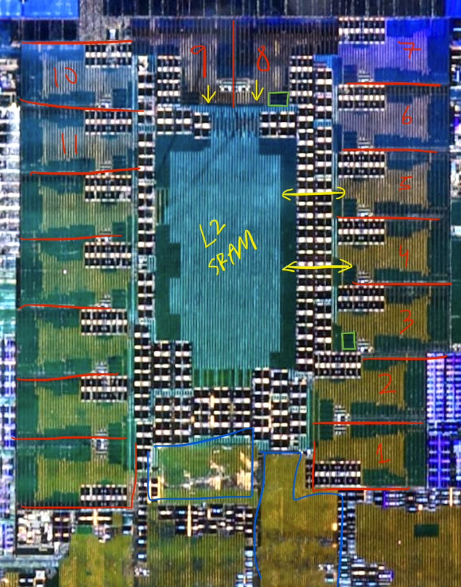
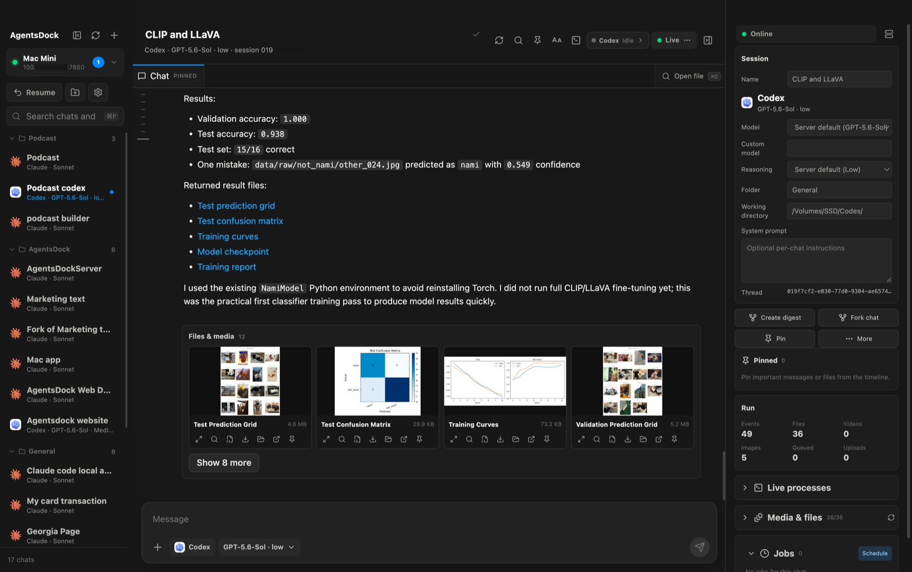
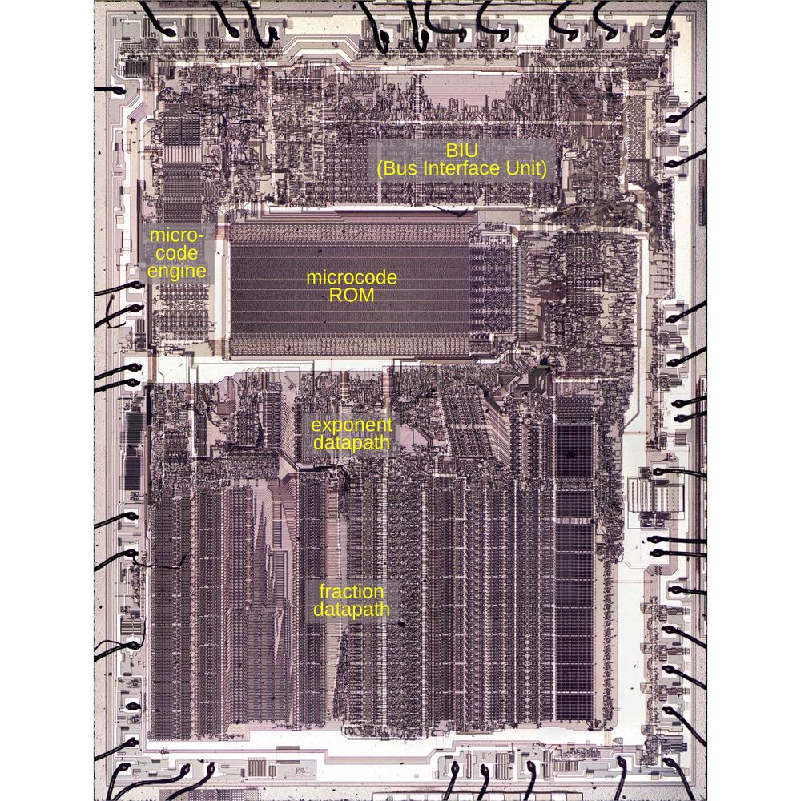

THE FRONT PAGE
EDITOR'S NOTE: A busy day in the latent space. #Judgment and craft
BREAKING VECTORS
MODEL ARCHITECTURES

Black-Box Archaeology on Apple’s Neural Engine
Engineers map the undocumented silicon behavior of Apple's NPU through microbenchmarking, recovering lower-level control over execution paths at the cost of fragile, undocumented hardware dependencies.
NEURAL HORIZONS
JWST Unmasks High-Redshift Galaxies Long Mislabeled as Quasars
Spectroscopic analysis reveals that several distant objects classified as supermassive black hole quasars are actually dense, hyper-active star-forming galaxies. The misclassification highlights how automated sky survey pipelines trade observational rigor for scale, skewing early-universe cosmological models.
LAB OUTPUTS

AgentsDock Builds an IDE to Treat Autonomous Workflows as First-Class Citizens
By shifting focus from code completion to orchestration and state management, the platform offers researchers tighter control over non-deterministic systems, though forcing rigid tooling onto fluid agent behavior risks constraining the very flexibility that makes them useful.
INFERENCE CORNER

How Intel’s 8087 handled floating-point scaling in 1980 microcode
An inspection of the Intel 8087 coprocessor's microcode reveals the intricate bit-level mechanics behind the FSCALE instruction, forcing scaling operations through a tight loop of exponent shifts and hardware flags. It serves as a reminder of an era when silicon constraints demanded exquisite discipline, though at the permanent risk of subtle, unfixable microcode bugs burned directly into silicon.